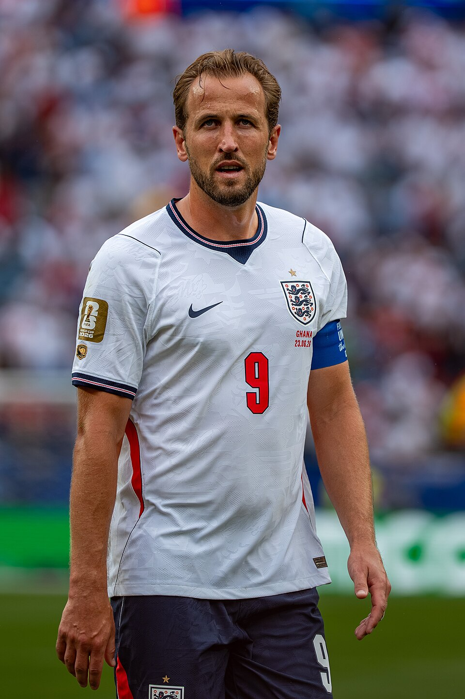
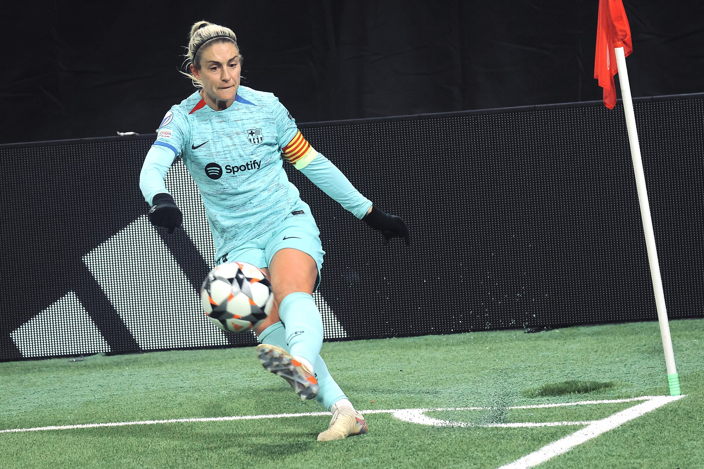

A Bola de Ouro 2026 consagrou dois dos principais protagonistas do futebol mundial. O inglês Harry Kane, atacante do Bayern de Munique, foi eleito o melhor jogador do mundo pela primeira vez, enquanto a espanhola Alexia Putellas conquistou sua terceira Bola de Ouro feminina, repetindo os feitos de 2021 e 2022.
A cerimônia aconteceu nesta terça-feira, 26 de outubro, no London Palladium Theatre, em Londres, e marcou os 70 anos da premiação criada pela revista France Football em 1956. A edição reconheceu os principais desempenhos da temporada 2025/26, considerando atuações individuais, títulos coletivos e protagonismo em grandes competições.
A primeira Bola de Ouro após uma temporada histórica
Harry Kane conquistou o prêmio de 2026 depois de superar Kylian Mbappé, segundo colocado, e Lamine Yamal, terceiro na classificação.
O atacante inglês construiu sua candidatura com uma temporada de produção ofensiva excepcional. Pelo Bayern de Munique, marcou 61 gols em 51 partidas, desempenho fundamental para a conquista da tríplice coroa nacional.
Pela seleção inglesa, Kane acrescentou outros 12 gols durante o período considerado, incluindo seis na Copa do Mundo de 2026, competição em que a Inglaterra terminou na terceira colocação.
O desempenho também garantiu ao atacante sua segunda Chuteira de Ouro Europeia e a terceira artilharia consecutiva da Bundesliga.
Números completos de Harry Kane na temporada 2025/26
Estatísticas gerais — Clube e Seleção:
- Jogos disputados: 65
- Gols marcados: 73
- Assistências: 8
- Participações diretas em gols: 81
- Gols pelo Bayern de Munique: 61
- Gols pela seleção inglesa: 12
- Cartões amarelos: 3
- Cartões vermelhos: 0
Números pelo Bayern de Munique:
- Bundesliga: 31 jogos, 36 gols e 5 assistências
- Copa da Alemanha: 6 jogos e 10 gols
- Champions League: 13 jogos, 14 gols e 2 assistências
- Supercopa Franz Beckenbauer: 1 jogo e 1 gol
- Total pelo clube: 51 jogos, 61 gols e 7 assistências
- Média de minutos por participação em gol pelo Bayern: 59
Títulos coletivos conquistados:
- Bundesliga 2025/26
- Copa da Alemanha 2025/26
- Supercopa da Alemanha 2025
Prêmios e conquistas individuais:
- Prêmio de Artilheiro da Temporada 2026
- Chuteira de Ouro Europeia 2025/26
- Artilheiro da Bundesliga 2025/26
A Bola de Ouro de 2026 também teve um significado histórico para a Inglaterra. Kane se tornou o primeiro jogador inglês a conquistar o prêmio masculino desde Michael Owen, em 2001.
Alexia Putellas conquista a terceira Bola de Ouro feminina
Entre as mulheres, Alexia Putellas voltou ao topo do mundo após uma temporada marcada por títulos e protagonismo no Barcelona.
A meio-campista espanhola conquistou o prêmio, superando a atacante polonesa Ewa Pajor, segunda colocada, e a jamaicana Khadija Shaw, terceira.
Alexia já havia vencido a premiação em 2021 e 2022. A conquista de 2026 reforçou sua importância histórica no futebol feminino e reconheceu uma temporada de grande influência ofensiva.
Durante a campanha 2025/26, a espanhola marcou 26 gols, distribuiu 15 assistências e conquistou títulos importantes pelo Barcelona e pela seleção da Espanha.
Um dos pontos altos foi a Champions League feminina, na qual registrou sete gols e sete assistências. Sua participação foi fundamental para o título europeu do clube catalão, e ela terminou eleita a melhor jogadora da competição.
Números completos na temporada 2025/26
Estatísticas gerais — Barcelona e Espanha:
- Jogos disputados: 53
- Gols marcados: 26
- Assistências: 15
- Participações diretas em gols: 41
- Cartões amarelos: 4
- Cartões vermelhos: 0
Destaques na Champions:
- Gols marcados: 7
- Assistências: 7
- Participações diretas em gols: 14
- Campeã
- Melhor jogadora da competição
Títulos coletivos conquistados:
- Champions League feminina 2025/26
- Campeonato Espanhol feminino 2025/26
- Copa da Rainha 2025/26
- Supercopa da Espanha feminina 2025/26
- Liga das Nações feminina de 2025, pela Espanha
Prêmios individuais:
- Melhor jogadora da Champions League feminina 2025/26
- Melhor jogadora da fase final da Liga das Nações feminina de 2025
A campanha europeia foi particularmente importante para o reconhecimento de Alexia. Além dos sete gols, suas sete assistências demonstraram influência direta na construção ofensiva do Barcelona.
O conjunto da temporada também reforçou uma característica fundamental da espanhola: a capacidade de atuar como organizadora e, ao mesmo tempo, contribuir decisivamente com gols.
Depois de sua trajetória vitoriosa no Barcelona, Alexia se transferiu para o London City Lionesses antes da temporada 2026/27, chegando ao futebol inglês como uma das jogadoras mais premiadas de sua geração.
Ranking da Bola de Ouro masculina 2026
A classificação reuniu jogadores de diferentes ligas europeias e seleções.
Confira o top 10:
- Harry Kane — Bayern de Munique
- Kylian Mbappé — Real Madrid
- Lamine Yamal — Barcelona
- Rodri — Manchester City/Barcelona
- Lionel Messi — Inter Miami
- Khvicha Kvaratskhelia — Paris Saint-Germain
- Ousmane Dembélé — Paris Saint-Germain
- Erling Haaland — Manchester City
- Michael Olise — Bayern de Munique
- Fabián Ruiz — Paris Saint-Germain
Entre os brasileiros, Vinícius Júnior terminou na 17ª colocação, Gabriel Magalhães apareceu em 21º e Marquinhos ficou em 25º.
A presença de atletas de diferentes posições demonstra que a votação considera mais do que o número de gols. O desempenho individual, a importância nas equipes e os resultados coletivos também são determinantes.
Ranking da Bola de Ouro feminina 2026
Entre as mulheres, o Barcelona teve presença expressiva entre as dez primeiras colocadas.
Confira o top 10:
- Alexia Putellas — Barcelona/London City Lionesses
- Ewa Pajor — Barcelona
- Khadija Shaw — Manchester City
- Melchie Dumornay — OL Lyonnes
- Patri Guijarro — Barcelona
- Caroline Graham Hansen — Barcelona
- Pernille Harder — Bayern de Munique
- Clàudia Pina — Barcelona
- Alessia Russo — Arsenal
- Temwa Chawinga — Kansas City Current
O domínio do time espanhol entre as primeiras colocadas refletiu a força coletiva da equipe durante a temporada europeia.
A brasileira Lorena, goleira da seleção nacional e do Kansas City Current, terminou na 28ª colocação e ficou em quinto lugar na votação do prêmio de melhor goleira.
Todos os vencedores da Bola de Ouro 2026
Além de Kane e Alexia, a premiação reconheceu jovens jogadores, goleiros, treinadores e clubes que se destacaram ao longo da temporada.
Confira a lista de premiados:
- Bola de Ouro masculina: Harry Kane — Bayern de Munique
- Bola de Ouro feminina: Alexia Putellas — Barcelona/London City Lionesses
- Melhor jogador jovem: Lamine Yamal — Barcelona
- Melhor jogadora jovem: Vicky López — Barcelona
- Melhor goleiro: Unai Simón — Athletic Club
- Melhor goleira: Cata Coll — Barcelona
- Melhor técnico masculino: Luis de la Fuente — Espanha
- Melhor técnico feminino: Pere Romeu — Barcelona
- Melhor clube masculino: Paris Saint-Germain
- Melhor clube feminino: Barcelona
- Artilheiro da temporada: Harry Kane — Bayern de Munique
- Artilheira da temporada: Charlyn Corral — Pachuca
- Prêmio Sócrates: Bukayo Saka — Arsenal
Lamine Yamal além de terminar em terceiro na Bola de Ouro, conquistou a premiação destinada ao melhor talento com menos de 21 anos.
Como funciona a votação
A Bola de Ouro é organizada pela revista France Football e utiliza votos de jornalistas especializados de diferentes países.
Na edição masculina de 2026, participaram 100 jornalistas, representantes das nações mais bem posicionadas no ranking da FIFA. Na categoria feminina, a votação contou com 50 jornalistas.
Cada votante escolhe dez jogadores ou jogadoras entre os indicados, atribuindo pontos de acordo com a posição de cada nome na lista.
O sistema de pontuação funciona da seguinte maneira:
- 1º lugar: 15 pontos
- 2º lugar: 12 pontos
- 3º lugar: 10 pontos
- 4º lugar: 8 pontos
- 5º lugar: 7 pontos
- 6º lugar: 5 pontos
- 7º lugar: 4 pontos
- 8º lugar: 3 pontos
- 9º lugar: 2 pontos
- 10º lugar: 1 ponto
O jogador ou a jogadora que acumula mais pontos recebe a Bola de Ouro.
Entre os critérios considerados estão o desempenho individual, as conquistas coletivas e a conduta esportiva.
Dessa forma, a premiação não é necessariamente entregue ao maior artilheiro da temporada. O objetivo é reconhecer o atleta que apresentou o conjunto de realizações mais relevante durante o período avaliado.
A Bola de Ouro é uma das principais premiações individuais do futebol mundial, mas não é a única a reconhecer os grandes protagonistas da temporada. A FIFA também realiza sua própria eleição, com critérios e um sistema de votação diferentes. Essa distinção ajuda a compreender por que os resultados das duas premiações nem sempre coincidem e como cada uma avalia o desempenho dos atletas. Para conhecer melhor essas diferenças e o histórico dos vencedores, vale conferir a história dos melhores jogadores do mundo eleitos pela FIFA no futebol masculino e feminino.
A escolha do local da premiação
A edição de 2026 marcou os 70 anos da criação da Bola de Ouro, cuja primeira premiação aconteceu em 1956.
Naquele ano, o inglês Stanley Matthews foi escolhido como melhor jogador europeu, tornando-se o primeiro vencedor da história.
A realização da cerimônia no London Palladium Theatre representou uma homenagem às origens da premiação e ao futebol inglês.
Desde 2024, a Bola de Ouro é organizada em parceria entre a France Football e a UEFA, mantendo sua tradição de reconhecer os principais nomes do futebol internacional.
O legado da Bola de Ouro 2026
A premiação deste ano ficará marcada pelas conquistas de Harry Kane e Alexia Putellas, dois atletas que transformaram temporadas de alto rendimento em reconhecimento individual máximo.
A cerimônia também destacou o crescimento de novos talentos, como Lamine Yamal e Vicky López, e reforçou a importância de clubes como Barcelona, Bayern de Munique e Paris Saint-Germain no cenário internacional.
Setenta anos depois da primeira premiação, a Bola de Ouro continua sendo uma referência para avaliar o protagonismo dos grandes nomes do futebol. A edição de 2026 mostrou que gols, assistências e títulos ajudam a contar a história de uma temporada, mas o reconhecimento máximo também passa pela capacidade de influenciar partidas, decidir campeonatos e deixar uma marca duradoura no esporte.